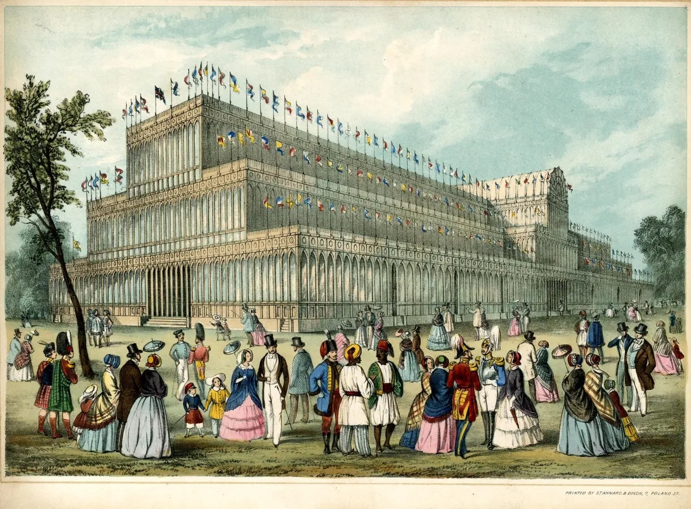

When Joseph Paxton unveiled the Crystal Palace in Hyde Park for the Great Exhibition of 1851, he did more than erect an exhibition hall—he fundamentally transformed the language of British architecture. For the first time, standardized cast-iron ribs, wrought-iron trusses, and expansive sheets of cylinder glass replaced heavy load-bearing masonry, creating an interior bathed in uninterrupted natural daylight.
More than 170 years later, the structural principles pioneered in Paxton’s masterpiece continue to define bespoke heritage conservatories and glasshouses across London’s period townhouses and country estates.

How 19th-Century Engineering Solved Span and Daylight
Before the mid-19th century, glazed garden structures were limited by thick timber rafters and small panes of crown glass. Paxton’s modular iron-and-glass system introduced three breakthroughs that remain central to architectural steel conservatories today:
- Slender Load-Bearing Sightlines: Iron’s high compressive and tensile strength allowed narrow mullions and roof ribs to carry immense glazed spans without visual bulk.
- Ridge-and-Furrow Roof Geometry: Angled glass planes maximised morning and afternoon solar capture while channeling rainwater efficiently into hollow structural columns.
- Off-Site Precision Prefabrication: Cast and wrought components were fabricated off-site to exact tolerances and bolted together rapidly on location—a methodology directly mirrored in modern workshop-engineered steel conservatories.
Translating Paxton’s Vision for 21st-Century London Homes
While 19th-century exhibition glasshouses were single-glazed seasonal structures, contemporary London homeowners require spaces that perform effortlessly in January as well as July. Modern bespoke metal conservatories bridge this gap by combining historic proportioning—arched transoms, ornamental crestings, and curved eaves—with thermally broken steel profiles, argon-filled low-emissivity double glazing, and discreet underfloor heating.
A building made from a kit of parts
Paxton's design began as a sketch on blotting paper and became, within months, a building of around 990,000 square feet in Hyde Park. It could be built that fast because it was designed as a system. A small number of standard components, repeated many thousands of times, were made in factories, delivered to the site and fixed by teams working to a set sequence. The planning grid was based on a 24-foot module, which governed the spacing of columns and girders, while the glass came in standard panes produced by Chance Brothers near Birmingham.
After the Great Exhibition closed, the building was taken down and re-erected in an enlarged form at Sydenham in south London, where it stood until it was destroyed by fire in 1936. Its name lives on in the district and the park that occupy the site.
What Paxton learned in the garden
Paxton was a gardener before he was an architect. As head gardener at Chatsworth he designed glasshouses, including the Great Stove and a lily house for the giant Victoria water lily. The ridge-and-furrow roofs and hollow columns that drained rainwater in the Crystal Palace came directly from that greenhouse work. It is a reminder that the great Victorian iron-and-glass buildings grew out of garden structures, and that the domestic conservatory and the exhibition hall share the same family tree.
Three principles that still guide our designs
- Repetition creates rhythm: a repeated bay, as in our Green Crescent with its twelve bays along a curved plan, gives a building order and makes ornament affordable because each piece is repeated.
- Structure can be the ornament: slender columns, arched heads and cresting are both structural and decorative, so nothing is added for show alone.
- Prefabrication protects quality: making components in a workshop to drawings gives accuracy that is hard to achieve by cutting and fitting on site.
Iron then, steel now
The Crystal Palace used cast iron for columns and many girders, with wrought iron where tension had to be carried. Cast iron is strong in compression but brittle, and wrought iron is tougher but was laborious to produce. Modern structural steel, which became widely available later in the century, combines strength in both tension and compression with consistent quality, and it can be rolled, welded and coated to last. That is why today's heritage-style conservatories are built in steel while keeping the proportions of nineteenth-century ironwork. Read more in our article on slim-sightline steel.
Bringing the lessons home
A London conservatory is a fraction of the size of the Crystal Palace, but the same ideas apply. A clear module, a repeated bay, slim structure and a roof designed to shed water and admit light make a small glasshouse feel generous. Explore our classical conservatory designs or read about the next landmark in the story, the Palm House at Kew.
Frequently asked questions
What is a "Crystal Palace style" conservatory?
It refers to a bespoke metal-and-glass structure characterised by modular bays, slim vertical mullions, arched upper transoms, barrel-vaulted or ridge-and-furrow roofs, and decorative cresting along the roofline.
Can modern steel conservatories achieve the same slim sightlines as historic cast iron?
Yes. High-strength architectural steel allows exceptionally narrow structural profiles that replicate 19th-century iron sightlines while supporting heavy modern double-glazed units.
Are Crystal Palace-inspired extensions suitable for London Conservation Areas?
Yes. Conservation officers frequently favour lightweight, transparent iron-and-steel additions on Georgian and Victorian properties because they preserve clear views of the historic brick or stone facade behind them.
How are modern heritage glasshouses protected against corrosion?
Unlike unprotected Victorian ironwork that required constant repainting, contemporary steel frames undergo multi-stage anti-corrosion treatment and architectural powder coating for multi-decade durability.